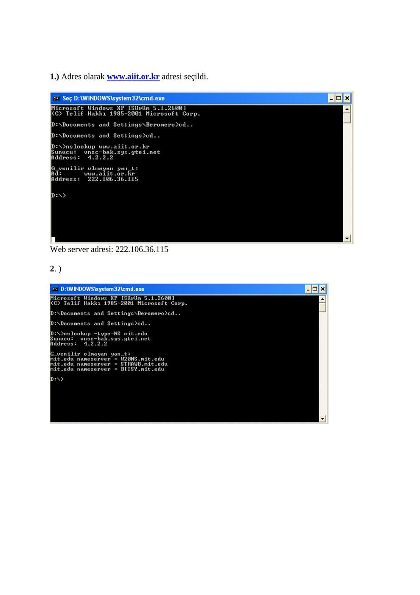
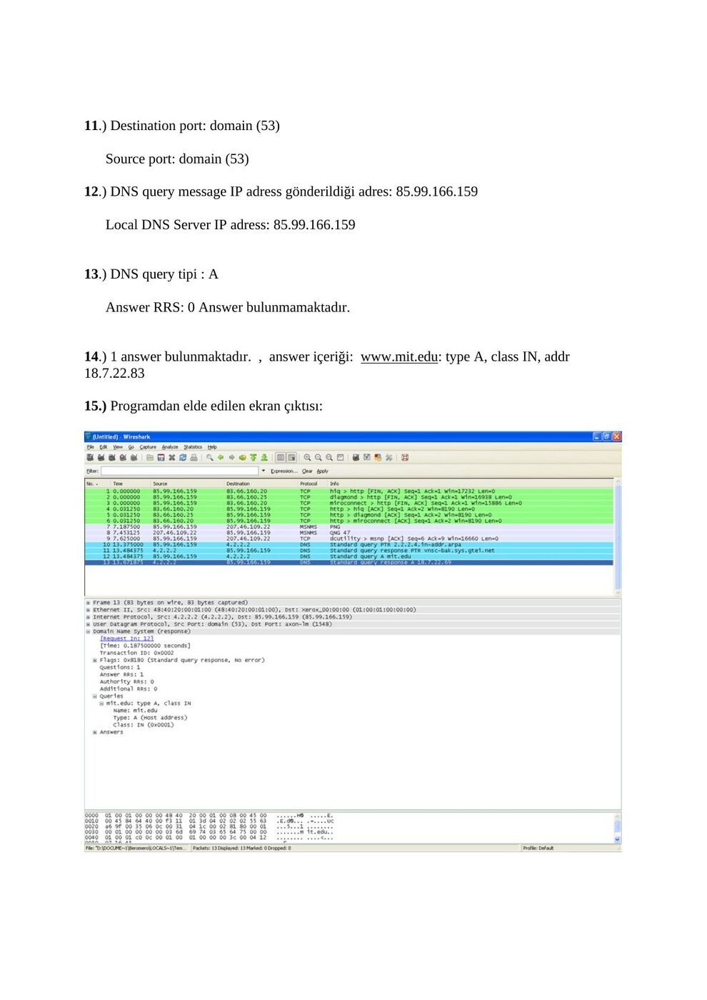
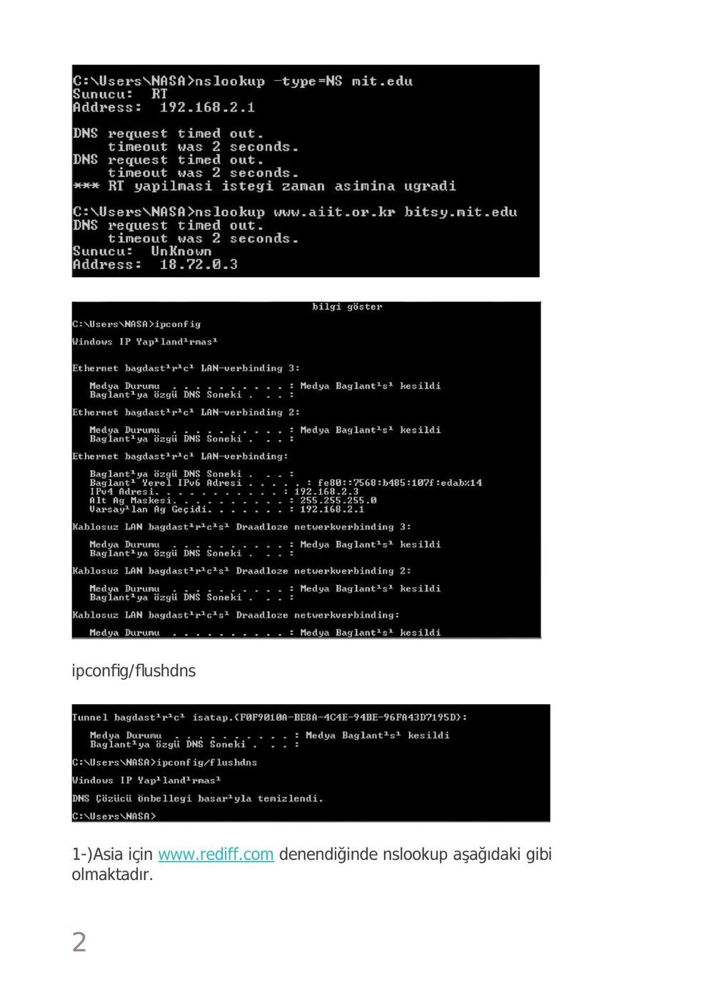
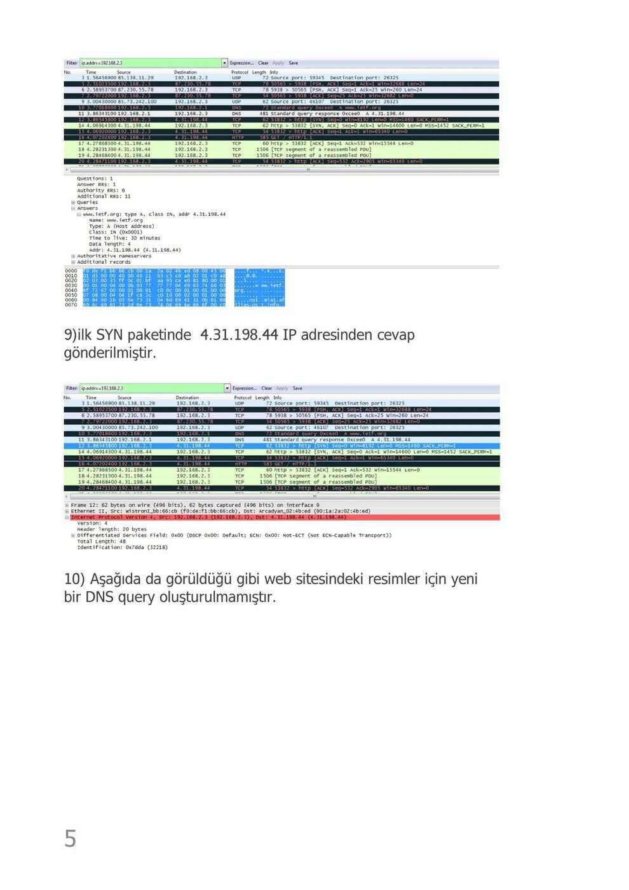
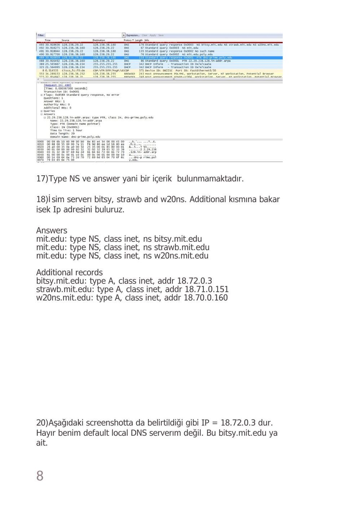
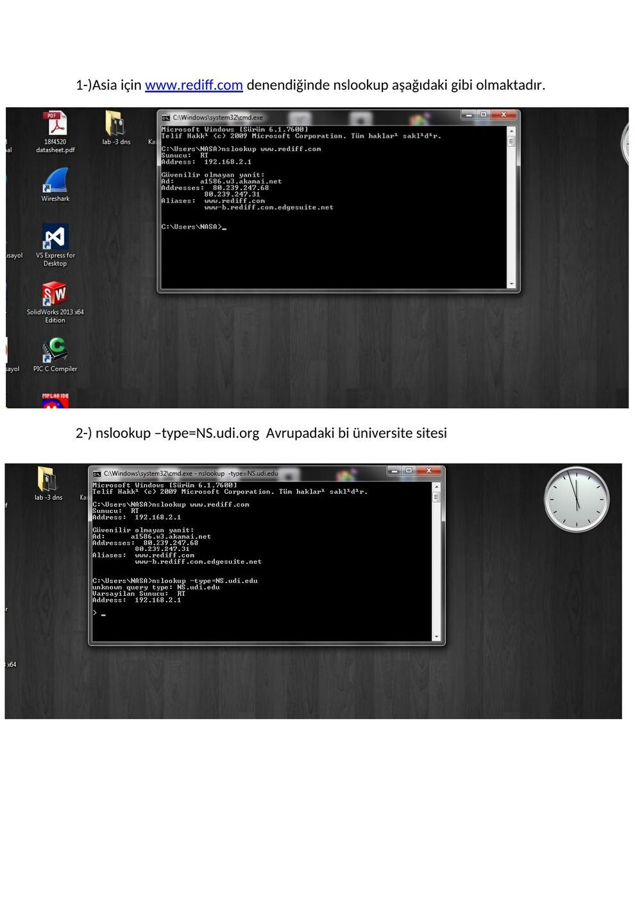
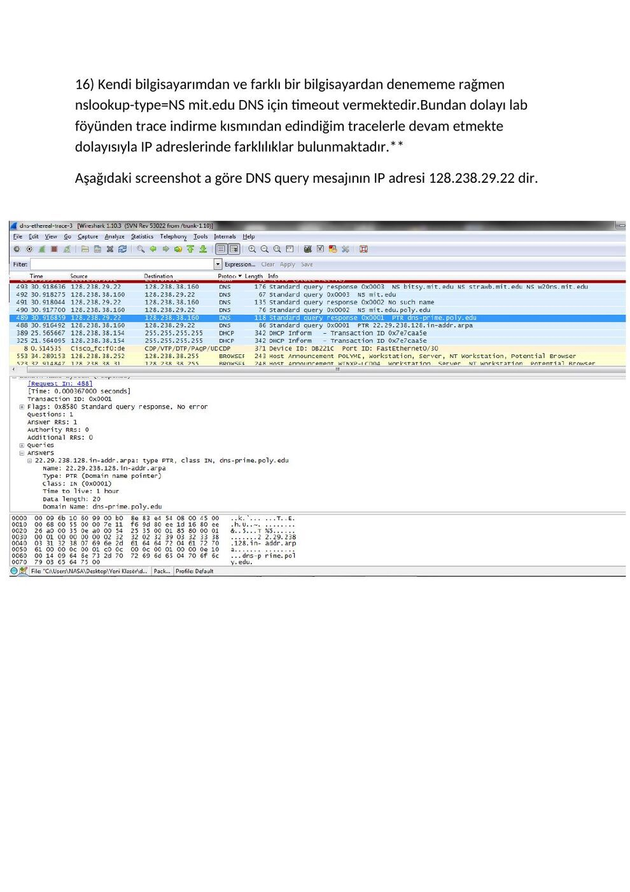

· EEM413
EEM413 Bilgisayar Ağları: DNS Laboratuvar Raporları
EEM413 – Bilgisayar Ağları · 14.12.2015 · 18.10.2026
Ders arşivindeki öğrenci laboratuvar raporlarıdır; öğrenci adları, numaraları ve kimlik bilgileri çıkarılmıştır. Belge üzerindeki tarih bulunmadığında kaynak dosyanın oluşturulma ya da son değiştirilme tarihi kullanılmıştır. Belgelerin arşiv için hazırlanmış PDF kopyaları yazının sonunda indirilebilir.
DNS raporu A
EEM 413 BİLGİSAYAR AĞLARI LAB 2 : DNS
1. ) Adres olarak www.aiit.or.kr adresi seçildi.
Web server adresi: 222.106.36.115
2. )
3. )
4. ) DNS query ve response mesajları UDP (User Datagram Protocol) üzerinden gönderilmiştir.
5. ) DNS response: Source Port : biolink-auth (3411)
DNS query message: Destination Port : domain (53)
6. ) DNS query mesajlarının gönderildiği IP adresi ile local DNS Server’ının IP adresi aynı ve
85. 99.166.159’tur.
7. ) DNS query tipi PT R(Domain name pointer)’dir. , Answer taşıyan query mesajı yoktur. Answer RRs: 0
8. ) 1 answer bulunmaktadır. Answer RRs: 1
9. ) IP address of the SYN packet is 64.170.98.32
IP address of the DNS response message is 85.99.166.159
10. ) Host yeni DNS queries bulundurmamaktadır.
11. ) Destination port: domain (53)
Source port: domain (53)
12. ) DNS query message IP adress gönderildiği adres: 85.99.166.159
Local DNS Server IP adress: 85.99.166.159
13. ) DNS query tipi : A
Answer RRS: 0 Answer bulunmamaktadır.
14. ) 1 answer bulunmaktadır. , answer içeriği: www.mit.edu: type A, class IN, addr
18. 7.22.83
15. ) Programdan elde edilen ekran çıktısı:
16. ) DNS query mesajının gittiği IP adresi local DNS server IP adresi ile aynı : 85.99.166.159
17. ) Type: NS (Authoritative name server)
Answer RRs: 0
18. ) mit.edu: type NS, class IN, ns bitsy.mit.edu, addr 18.72.0.3
mit.edu: type NS, class IN, ns w20ns.mit.edu, addr 18.70.0.160
mit.edu: type NS, class IN, ns strawb.mit.edu, addr 18.71.0.151
19. ) Programdan elde edilen ekran çıktısı:
20. ) DNS query message IP adress gönderildiği adres: 85.99.166.159
Local DNS Server IP adress: 85.99.166.159
21. ) Type: PTR (Domain name pointer)
Answer RRs: 0
22. ) Answer RRs: 1
3. 0.72.18.in-addr.arpa: type PTR, class IN, BITSY.MIT.EDU
www.aiit.or.kr: type A, class IN, addr 222.106.36.115
23. ) Programdan elde edilen ekran çıktısı:


DNS raporu B
EEM-413 BİLGİSAYAR AĞLARI
LABORATUVAR 2 - DNS Nslookup www.mit.edu yazıldığında ;
Nslookup –type = NS mit.edu yazıldığında ;
Nslookup www.aiit.or.kr bitsy.mit.edu
ipconfig/flushdns
1-)Asia için www.rediff.com denendiğinde nslookup aşağıdaki gibi olmaktadır.
2-) nslookup –type=NS.udi.org Avrupadaki bi üniversite sitesi
3-) nslookup mail.yahoo.com ya baktığımızda ;
4-)www.ietf.com için wireshark ta bakıldığında aşağıda kırmızıyla belirttiğim gibi User Datagram Protocol yani UDP kullanılmıştır.
5. Yukarıdaki screenshotta da görüldüğü gibi Source port (Scr port ) = 65292 ve Destination port yani Dst = 53 üncü porttadır.
6. Aşağıda da gösterdiğim gibi Varsayılan ağ geçidi ve DHCP sunucusu IP si 192.168.2.1 dir.Wire shar ta da görülmektedir. Benim Ip adresimde 192.168.2.3 dür.
7. Bu standart bir query mesaj ve herhangi bir veri içermemektedir. Yukarıdaki screenshotta da görülmektedir.
8. Aşağıda da gösterildiği gibi TYPE A class IN addres 4.31.198.44 ve DNS sekmesini açtığımızda answer =1 görülmektedir.
9. ilk SYN paketinde 4.31.198.44 IP adresinden cevap gönderilmiştir.
10. Aşağıda da görüldüğü gibi web sitesindeki resimler için yeni bir DNS query oluşturulmamıştır.
nslookup cmd kısmından www.mit.edu yaptığımızda aşağıdaki çıktıyı görmekteyiz.
11. Source port 55516 ve Destination Port ta 53 dür. Yukarıdaki screen shottada görülmektedir.
12. Daha önce ipconfig / all yaptığımızda da gördüğümüz gibi
192. 168.2.1 IP adresi benim local default DNS server IP adresimdir.
13. Yukarıdaki screenshottada görüldüğü gibi TYPE A DNS türüdür. Ve Answer veya bi içerik içermez.
14. Aşağıdaki screenshottada görüldüğü gibi 1 cevap gelmiş ve içeriğide aşağıda belirtilmiştir.
16. Kendi bilgisayarımdan ve farklı bir bilgisayardan denememe rağmen nslookup-type=NS mit.edu DNS için timeout vermektedir. Bundan dolayı lab föyünden trace indirme kısmından edindiğim tracelerle devam etmekte dolayısıyla IP adreslerinde farklılıklar bulunmaktadır. Aşağıdaki screenshot a göre DNS query mesajının IP adresi 128.238.29.22 dir.
17. Type NS ve answer yani bir içerik bulunmamaktadır.
18. İsim serverı bitsy, strawb and w20ns. Additional kısmına bakar isek Ip adresini buluruz.
Answers mit.edu: type NS, class inet, ns bitsy.mit.edu mit.edu: type NS, class inet, ns strawb.mit.edu mit.edu: type NS, class inet, ns w20ns.mit.edu
Additional records bitsy.mit.edu: type A, class inet, addr 18.72.0.3 strawb.mit.edu: type A, class inet, addr 18.71.0.151 w20ns.mit.edu: type A, class inet, addr 18.70.0.160
20. Aşağıdaki screenshotta da belirtildiği gibi IP = 18.72.0.3 dur. Hayır benim default local DNS serverım değil. Bu bitsy.mit.edu ya ait.
21. Yukarıda da görüldüğü gibi DNS TYPE A dır. Ve answer yoktur.
22-23) Aşağıdaki screenshot tada görüldüğü gibi 1 answer var ve içeriğide screenshotta gösterilmiştir.



DNS raporu C
EEM-413 Bilgisayar Ağları Lab2 (DNS)
Nslookup www.mit.edu yazıldığında ;
Nslookup –type = NS mit.edu yazıldığında ;
Nslookup www.aiit.or.kr bitsy.mit.edu
- İpconfig/all
İpconfig /flushdns
1-)Asia için www.rediff.com denendiğinde nslookup aşağıdaki gibi olmaktadır.
2-) nslookup –type=NS.udi.org Avrupadaki bi üniversite sitesi
3-) nslookup mail.yahoo.com ya baktığımızda ;
3. Kısım ilk işlemi;
4.
www.ietf.com için wireshark ta bakıldığında aşağıda kırmızıyla belirttiğim gibi User Datagram Protocol yani UDP kullanılmıştır.
5. Yukarıdaki screenshotta da görüldüğü gibi Source port (Scr port ) = 65292 ve Destination port yani Dst = 53 üncü porttadır.
6. Aşağıda da gösterdiğim gibi Varsayılan ağ geçidi ve DHCP sunucusu IP si
192. 168.2.1 dir.Wire shar ta da görülmektedir. Benim Ip adresimde 192.168.2.3 dür.
7. Bu standart bir query mesaj ve herhangi bir veri içermemektedir. Yukarıdaki screenshotta da görülmektedir.
8. Aşağıda da gösterildiği gibi TYPE A class IN addres 4.31.198.44 ve DNS sekmesini açtığımızda answer =1 görülmektedir.
9. ilk SYN paketinde 4.31.198.44 IP adresinden cevap gönderilmiştir.
10. Aşağıda da görüldüğü gibi web sitesindeki resimler için yeni bir DNS query oluşturulmamıştır.
** nslookup cmd kısmından www.mit.edu yaptığımızda aşağıdaki çıktıyı görmekteyiz.
11. Source port 55516 ve Destination Port ta 53 dür. Yukarıdaki screen shottada görülmektedir.
12. Daha önce ipconfig / all yaptığımızda da gördüğümüz gibi 192.168.2.1 IP adresi benim local default DNS server IP adresimdir.
13. Yukarıdaki screenshottada görüldüğü gibi TYPE A DNS türüdür. Ve Answer veya bi içerik içermez.
14. Aşağıdaki screenshottada görüldüğü gibi 1 cevap gelmiş ve içeriğide aşağıda belirtilmiştir.
16. Kendi bilgisayarımdan ve farklı bir bilgisayardan denememe rağmen nslookup-type=NS mit.edu DNS için timeout vermektedir.Bundan dolayı lab föyünden trace indirme kısmından edindiğim tracelerle devam etmekte dolayısıyla IP adreslerinde farklılıklar bulunmaktadır.**
Aşağıdaki screenshot a göre DNS query mesajının IP adresi 128.238.29.22 dir.
17.
Type NS ve answer yani bir içerik bulunmamaktadır.
18.
İsim serverı bitsy, strawb and w20ns. Additional kısmına bakar isek Ip adresini buluruz Answers mit.edu: type NS, class inet, ns bitsy.mit.edu mit.edu: type NS, class inet, ns strawb.mit.edu mit.edu: type NS, class inet, ns w20ns.mit.edu Additional records bitsy.mit.edu: type A, class inet, addr 18.72.0.3 strawb.mit.edu: type A, class inet, addr 18.71.0.151 w20ns.mit.edu: type A, class inet, addr 18.70.0.160
20.
Bu soruda da aynı sıkıntı yaşandığı için aynı şekilde trace dosyasını föyde belirtilen siteden indirerek yaptım.**
Aşağıdaki screenshotta da belirtildiği gibi IP = 18.72.0.3 dur. Hayır benim default local DNS serverım değil. Bu bitsy.mit.edu ya ait.
21. Yukarıda da görüldüğü gibi DNS TYPE A dır. Ve answer yoktur.
22-23) Aşağıdaki screenshot tada görüldüğü gibi 1 answer var ve içeriğide screenshotta gösterilmiştir.


Not: DNS yalnız UDP kullanmaz; TCP de kullanılabilir. Raporlarda görülen UDP bilgisi incelenen yakalama içindir. Soru numaralarının atlaması ve bazı cevapların bulunmaması kaynak belgelerin özelliğidir.